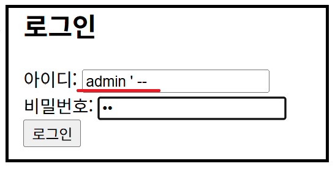
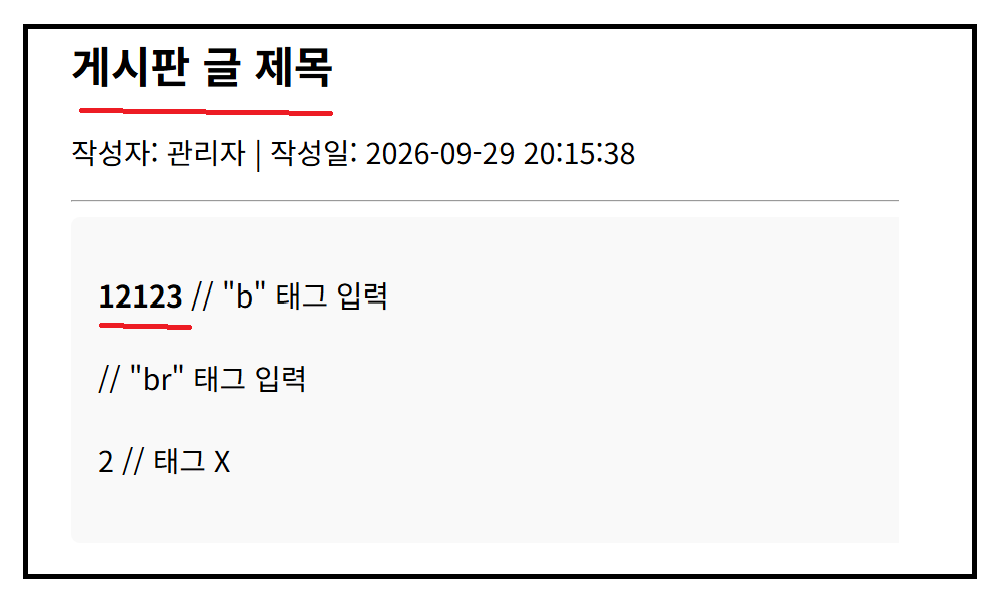
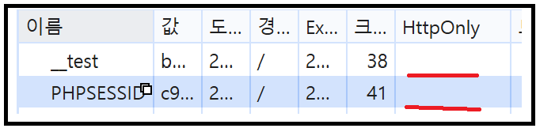
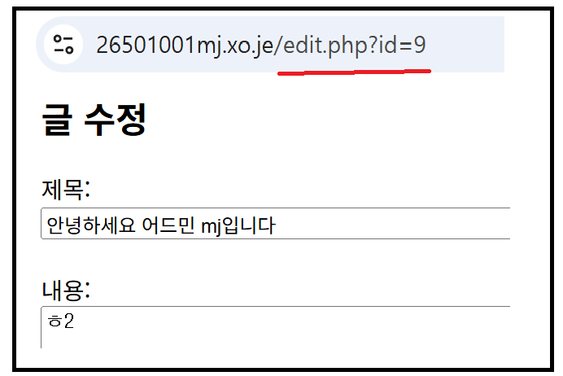

🛡️ 웹사이트 취약점 진단 보고서
Vulnerable Shop 서비스 수동 점검 및 패킷 분석 결과
1. 진단 개요
주요 점검 대상 경로
- 메인 페이지:
index.php - 게시판:
board.php - 글 작성:
write.php - 글 수정:
edit.php - 회원가입:
register.php - 로그인:
login.php - 프로필 정보:
profile.php
2. 점검 결과 요약
| 점검 관점 | 확인한 위치·기능 | 진단 결과 | 발견 사항 |
|---|---|---|---|
| SQL Injection | 로그인, 검색 등 | 취약 | 로그인 폼 SQLi 입력으로 인증 우회 가능 |
| XSS (Cross-Site Scripting) | 글쓰기, 댓글, 검색 등 | 취약 | 게시글 제목 및 댓글 내 악성 스크립트 실행/렌더링 가능 |
| 인증 & 세션 | 로그인, 관리자 도구 등 | 취약 | 세션 쿠키 내 HttpOnly 속성 누락 식별 |
| IDOR · 접근제어 | 게시글, 마이페이지 등 | 취약 | URL 파라미터 변조(edit.php?id=*)를 통한 타 사용자 게시글 접근/수정 가능 |
| 권한 검사 | 관리자 페이지, 로그인 필요 기능 | 미확인 | 점검 범위 내 미확인 항목 |
| 파일 업로드 | 첨부파일, 프로필 사진 | 취약 | 실행 파일 및 확장자 변조(위장) 파일 업로드 허용 |
| 정보 노출 & 설정 | 오류 메시지, 백업 파일 등 | 점검 제외 | 범위 외 항목으로 점검 제외 |
3. 발견한 취약점 상세
🚨 3.1. SQL Injection을 이용한 인증 우회 (취약)
심각도: 높음 (High)심각도 분석: 데이터베이스 쿼리 검증 미비로 인해 공격자가 비밀번호 검증을 우회하고 임의의 계정으로 즉시 인증을 획득할 수 있는 고위험 취약점입니다.

상세 내용: 로그인 폼 입력 파라미터에 admin ' -- 혹은 ' OR '1'='1 구문 등을 주입할 경우, 서버에서 입력값에 대한 검증 없이 DB 쿼리를 생성하여 참(True) 결과를 반환함에 따라 비밀번호 입력 없이 로그인이 우회되는 현상을 확인하였습니다.
대응 방안: 데이터베이스 조회 시 Prepared Statement 및 Parameterized Query를 사용하여 입력값이 SQL 구문으로 해석되지 않도록 처리해야 합니다.
🚨 3.2. 게시판/댓글 내 Cross-Site Scripting (XSS) (취약)
심각도: 높음 (High)심각도 분석: 사용자가 입력한 악성 자바스크립트 코드가 브라우저에서 실행되어 세션 쿠키 탈취, 악성 사이트 리다이렉트, 세션 피싱 등의 차후 2차 공격으로 연결될 수 있습니다.

상세 내용: 글 작성 및 댓글 입력 폼에서 스크립트 태그(예: <script>alert(1)</script>)를 입력할 때 적절한 이스케이프 처리 없이 그대로 DB에 저장되거나 출력되어 브라우저에서 코드가 렌더링되고 실행되는 것을 확인하였습니다.
대응 방안: 출력 시 HTML Entity Encoding(htmlspecialchars 등)을 적용하여 특수문자를 안전한 문자로 변환하고, 입력 데이터에 대한 Sanitization을 수행해야 합니다.
🚨 3.3. 세션 쿠키 내 HttpOnly 속성 미설정 (취약)
심각도: 보통 (Medium)심각도 분석: 단독 취약점만으로는 직접적인 피해를 주기 어렵지만, 추후 애플리케이션 내에 Cross-Site Scripting(XSS) 취약점이 발생할 경우 세션 쿠키 탈취 및 계정 도용으로 이어질 수 있는 연계 공격 요소입니다.

상세 내용: 개발자 도구를 통해 웹 애플리케이션 세션 쿠키를 분석한 결과, 세션 식별자 쿠키에 HttpOnly 플래그가 설정되어 있지 않음을 확인하였습니다. 이에 따라 자바스크립트(document.cookie) 명령을 통해 클라이언트 단에서 세션 쿠키 값에 접근이 가능한 상태입니다.
대응 방안: 서버 측 세션 쿠키 발급 시 HttpOnly 속성을 필수 적용하여 자바스크립트를 통한 쿠키 접근을 차단해야 합니다.
🚨 3.4. URL 파라미터 조작을 통한 IDOR 접근 제어 미비 (취약)
심각도: 높음 (High)심각도 분석: 타 사용자의 소유 자원에 무단으로 접근하거나 수정/삭제할 수 있어 데이터 훼손 및 정보 유출 위험이 존재합니다.

상세 내용: 게시글 수정 기능 수행 시 UI상의 버튼을 사용하지 않고, URL 파라미터를 edit.php?id=[타인글ID] 형태 직접 요청하더라도 서버 단에서 작성자 세션 일치 여부를 검증하지 않아 타 사용자의 게시글이 정상적으로 수정 및 실행되는 문제를 확인하였습니다.
대응 방안: 서버 측에서 요청 파라미터의 객체 ID에 대해 현재 로그인된 세션 사용자가 접근/수정할 수 있는 권한이 있는지 인가(Authorization) 로직을 필수로 구현해야 합니다.
🚨 3.5. 서버 측 실행 파일(웹셸) 업로드 허용 (취약)
심각도: 높음 (High)심각도 분석: 공격자가 원격 코드 실행(RCE)을 가능하게 하는 웹셸을 서버에 생성할 수 있어, 서버 전체 권한 탈취 및 시스템 탈취로 이어지는 최고 위험도의 취약점입니다.
상세 내용: 첨부파일 및 프로필 파일 업로드 기능 이용 시 확장자 검증 로직이 부재하여 .php, .php5 등의 서버 스크립트 실행 파일이 그대로 업로드되고 저장 경로를 통해 명령어가 실행됨을 확인하였습니다.
대응 방안: 허용된 확장자 목록(White List)만 업로드를 승인하고, 업로드 디렉터리의 실행 권한(Execute Permission)을 제거하며 파일명을 난수화하여 저장해야 합니다.
🚨 3.6. 확장자 변조(위장 파일) 업로드 검증 우회 (취약)
심각도: 높음 (High)심각도 분석: 파일 검증 우회 기법을 통해 우회 파일 업로드가 성공할 경우 보안 솔루션 탐지를 회피하여 시스템 침투가 가능해집니다.
상세 내용: 파일 업로드 검증 시 MIME 타입이나 확장자만을 단순 체크할 경우, 확장자를 변조하거나 이중 확장자 기법을 사용한 위장 파일이 서버 단에서 제대로 필터링되지 않고 전송 및 저장되는 현상을 식별하였습니다.
대응 방안: 클라이언트 헤더 검증 외에도 서버 단에서 파일 헤더(Magic Byte)를 직접 검증하고 Content-Type 재지정 및 확장자 무력화를 적용해야 합니다.
4. 미확인 항목 및 점검 한계
- 파일 삭제 기능 부재
애플리케이션 내 파일 삭제 인터페이스가 존재하지 않아 관련 접근 제어 및 취약점 점검을 진행하지 못함.
5. 결론 및 종합 의견
- 점검한 기능: 로그인, 회원가입, 게시판, 글 작성/수정, 프로필 페이지 등
- 확인된 취약점: SQL Injection, XSS, 인증/세션, IDOR, 파일 업로드 등 (다수 발견)
- 우선 수정할 항목:
파일 업로드 취약점(원격 코드 실행 위험) 및SQL Injection
종합 의견
진단 대상 애플리케이션 점검 결과, 웹셸 업로드가 가능한 파일 업로드 취약점 및 인증 우회가 가능한 SQL Injection을 포함하여 핵심 기능 전반에 걸쳐 고위험 취약점이 다수 발견되었습니다. 특히 서버 권한 탈취로 이어질 수 있는 파일 업로드 검증 로직 구현과 Prepared Statement 적용을 통한 SQLi 방어가 시급히 이뤄져야 합니다.